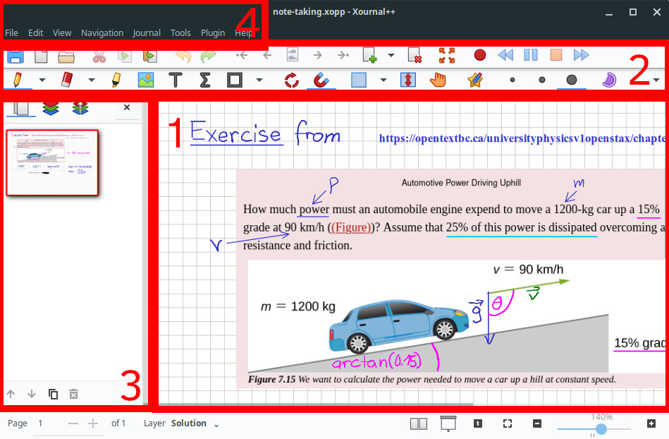

Whirlwind Tour
This is a quick tutorial for beginners that will demonstrate:
- How to set up Xournal++ for the first time
- How to create a basic Xournal++ journal file
- The functionality of some common tools
- How to annotate a PDF file
- How to export a Xournal++ journal file to other file formats
We assume that the reader has already downloaded and installed Xournal++. If not, instructions can be found here.
How Xournal++ works¶
Xournal++ is a note-taking tool focused on handwritten notes and digital
tablet/stylus input. To this end, notes are stored in files called Journals
(.xopp format). A journal can be thought of as a collection of pages of
different formats and sizes. The pages themselves contain visual elements
such as pen strokes, shapes, images, etc.
To allow users to create, view, and edit journals, Xournal++ provides a graphical application (shown in the image below).

The application is divided into the following sections:
- The canvas displays the currently loaded journal and allows the user to create, delete, or edit elements.
- The toolbars allow the user to select tools, which are used to create
and modify elements. For example, the Pen Tool
 can be used to
draw/write strokes. The Select Object Tool
can be used to
draw/write strokes. The Select Object Tool  can be used to move, resize,
and scale elements. One tool may be designated as the "currently activated
tool" at any time.
can be used to move, resize,
and scale elements. One tool may be designated as the "currently activated
tool" at any time. - The sidebar is used to preview parts of the journal, including the pages and layers (see the section below). Furthermore, buttons at the bottom of the sidebar allow the user to create pages.
- The menubar contains a list of menus that provide access to less frequently used features, such as the Preferences window and the Plugin Manager.
This is roughly all the information that the reader needs to know to get started
with Xournal++. For example, suppose we want to create a stroke. To do this,
select the Pen Tool with a mouse, and then hold the left mouse button
down across some portion of the canvas.
First time setup¶
Due to the wide variety of input devices that exist, the default input device
settings in Xournal++ may not be appropriate for your system. Here, we briefly
highlight the settings that may need to be changed in order for Xournal++ to
work correctly for you. Settings may be changed by accessing the Edit >
Preferences button in the menu.
Input device setup¶
If you are unable to draw strokes or type characters in the Text Tool, check out
the Input System tab. This will list the input devices that Xournal++ detects,
as well as the default device class assigned to each device. If the device class
is incorrect, you can override the device class using the drop down menu to the
right.
For example:
- If you are using a combined wireless USB mouse/keyboard device, you may need
to switch the input device from
MouseorKeyboardtoMouse+Keyboard Combo. - A drawing tablet stylus may be detected as a mouse, which means that pressure
sensitivity will not work. To fix this, you may need to override the device as
a
Stylus.
Temporary tool button bindings¶
The primary "button" of each input device, such as the left mouse button or the
stylus tip, will activate the currently selected tool when pressed. However, it
is also possible to configure the input devices so that pressing a secondary
button will temporarily activate a different tool. For example, the right mouse
and middle mouse buttons are set to temporarily activate the Eraser and Hand
tools (respectively) by default.
Touchscreen¶
By default, touch motions on touchscreen devices will pan or scroll the canvas. An alternate mode, called "Touch Drawing", causes touch motions to invoke the selected tool instead. This allows strokes to be drawn directly with touch motions.
Creating your first document¶
Now that we've set up the default settings, we are ready to start exploring how Xournal++ might actually be used.
- The typical workflow begins with creating a new journal or loading an
existing one. The former can be achieved using the
File > Newmenu item (or by clicking the New Document Button on the toolbar), and the latter can be done
by using one of the
on the toolbar), and the latter can be done
by using one of the File > Openoptions (or by clicking the Open File Button on the toolbar).
on the toolbar). - To create a stroke, select the Pen Tool from the toolbar. Hold down
your stylus or mouse on the screen to initiate a stroke, drag it to draw the
stroke, and then lift it to end the stroke. You can change stroke attributes
such as shape, color, and fill using some of the toggle buttons and drop down
menus in the toolbar.
- Add a new page by clicking the Insert Page Button
 or using one of the
or using one of the
Journal > New Pagemenu buttons. - Save the journal to
.xoppformat usingFile > Safeor by clicking the Save Button .
.
Using tools to create and manipulate elements¶
The main way to create and manipulate visual elements is to use a set of
tools that are built into the application. We've seen one such example
above: the Pen Tool . Exactly one tool is marked "selected" at any given
time, and the selected tool can be changed by pressing one of the tool buttons
on the toolbar. Here is a list of some other commonly used tools:
| Tool | Functionality |
|---|---|
Eraser Tool  |
removes strokes |
Highlighter Tool  |
like the Pen Tool but with transparent strokes (like a highlighter) |
Text Tool  |
insert typed text (color and font are selectable) |
LaTeX Tool  |
insert LaTeX formula or diagrams |
| Select Object Tool |
selects objects, so they can be moved, scaled, or deleted |
Select Rectangle Tool  |
select objects in a rectangular region |
Of special note are the family of "select tools" like Select Object Tool
and Select Rectangle Tool , which are used to modify existing elements:
- Select one or more elements using Select Object Tool or Select Rectangle Tool . A pale blue rectangle called the selection
rectangle will be drawn around them.
- Only one selection can be active at a time. To cancel a selection, press on an empty part of the page with a selection tool, or switch to another tool.
- Move the selected element(s) by pressing and holding them with your left mouse button / stylus.
- Scale the selected elements(s) by dragging one of the eight white boxes around the edges of the selection rectangle. Alternatively, drag an edge of the selection rectangle.
- Duplicate the selected element(s) by pressing the selection rectangle with the right mouse button (or button on stylus mapped to right mouse button).
- Delete the selected element(s) by pressing the red rectangle with a cross. Alternatively, press the Del button on your keyboard.
Annotating PDF files¶
In addition to creating journals from scratch, Xournal++ can also be used to "annotate" PDF files by creating journals that use a PDF file as a background.
- Use either
File > OpenorFile > Annotate PDFto load a PDF file. - "Annotate" the PDF pages by using tools such as the Highlighter Tool , Pen Tool , and Text Tool to add elements on top of the PDF
pages.
- Save the journal to
.xoppformat usingFile > Safeor by clicking the Save Button . Note that the .xoppfile requires the original PDF to be kept around.
Exporting journals to other formats¶
Xournal++ can export a journal file to many different file formats.
- Open a journal.
- Use
File > Export to PDFto generate a PDF file from the journal. - To export to other file formats such as SVG or PNG, or to set export options
such as the specific pages to export, use
File > Export Asto choose the file format and then set the export options.